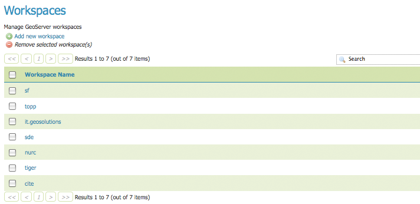
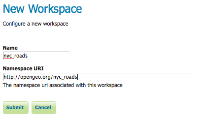
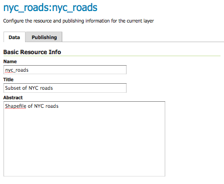

Publishing a Shapefile¶
이번 예제에서는 GeoServer에서 shapefile을 생산하는 방법을 단계별로 설명합니다.
주석
이 예제는 GeoServer가 http://localhost:8080/geoserver/web 주소에서 실행되고 있다고 가정합니다.
Getting Started¶
nyc_roads.zip 파일을 다운로드합니다. 이 문서 아카이브는 이번 예제에서 사용할 뉴욕 시 도로 shapefile을 포함하고 있습니다.
nyc_roads.zip 파일의 압축을 풉니다. 압축이 풀린 nyc_roads 폴더에는 다음 4개 파일이 있습니다.
nyc_roads.shp nyc_roads.shx nyc_roads.dbf nyc_roads.prj
#. nyc_roads 폴더를 <GEOSERVER_DATA_DIR>/data 디렉터리 아래로 이동합니다. <GEOSERVER_DATA_DIR>는 GeoServer 데이터 디렉터리의 루트 디렉터리입니다. GeoServer 파일 구조를 바꾸지 않았다면 그 경로는 geoserver/data_dir/data/nyc_roads 가 될 것입니다.
Create a New Workspace¶
첫번째 단계는 shapefile을 위한 작업공간(workspace)을 만드는 일입니다. 작업공간이란 유사한 레이어들을 함께 묶어두기 위한 컨테이너를 말합니다.
웹브라우저에서 http://localhost:8080/geoserver/web 주소로 이동합니다.
Logging In에서 설명한대로 GeoServer에 로그인합니다.
왼쪽 메뉴에서 Data‣Workspaces 를 클릭합니다.
Workspaces 페이지
새로운 작업공간을 생성하려면 Add new workspace 버튼을 클릭한 다음, 작업공간의 Name 및 Namespace URI를 입력해야 합니다.
새로운 작업공간 설정
Name 란에 nyc_roads를 입력하고, Namespace URI란에 http://opengeo.org/nyc_roads 라고 입력하십시오. 작업공간의 명칭은 사용자 프로젝트를 설명해주는 식별자(identifier) 역할을 하는데, 10자를 넘거나 공백을 포함할 수 없습니다. Namespace URI(Uniform Resource Identifier)는 일반적으로 사용자 프로젝트와 관련된 URL로 해당 작업공간을 표시하는, 추적 가능한 추가적인 식별자 역할을 할 수도 있습니다.
NYC Roads 작업공간
Submit 버튼을 클릭하십시오. nyc_roads 작업공간이 Workspaces 목록에 추가될 것입니다.
Create a Data Store¶
왼쪽 메뉴에서 Data‣Stores 를 클릭합니다.
nyc_roads Shapefile을 추가하려면 새로운 Store를 만들어야 합니다. Add new store 버튼을 클릭하십시오. GeoServer가 지원하는 데이터 소스 목록이 표시됩니다.
데이터 소스 목록
Shapefile - ESRI(tm) Shapefiles (.shp)을 선택하십시오. New Vector Data Source 페이지가 표시됩니다.
먼저 Basic Store Info를 설정하십시오. 드롭다운 메뉴에서 nyc_roads 작업공간을 선택하십시오. Data Source Name 란에 NYC Roads 를 입력한 다음, Description 란에 간단한 (“Roads in New York City” 같은) 설명을 입력하십시오.
Connection Parameters의 URL 란에 Shapefile의 정확한 경로를 file:data/nyc_roads/nyc_roads.shp 와 같이 입력합니다.
Basic Store Info 및 Connection Parameters 페이지
Save를 클릭하면, nyc_roads 레이어를 설정하기 위해 New Layer chooser 페이지로 이동할 것입니다.
Create a Layer¶
New Layer chooser 페이지에서 nyc_roads 레이어를 선택합니다.
New Layer chooser 페이지
Edit Layer 페이지에서 레이어의 Data 및 Publishing 파라미터를 정의합니다. Title 란 및 Abstract 란에 nyc_roads 레이어에 대해 짧게 입력합니다.
Basic Resource Information 페이지
레이어의 bounding boxes를 생성하기 위해 먼저 Compute from data를 클릭한 다음 Compute from Native bounds를 클릭합니다.
Bounding Boxes 생성
Publishing 탭으로 전환하여 레이어 스타일을 설정하십시오.
Default Style 드롭다운 목록에서 line 스타일을 선택하십시오.
기본 스타일 선택
페이지 맨 아래로 스크롤한 다음 Save를 클릭하여 레이어 설정을 완료합니다.
Preview the Layer¶
nyc_roads 레이어가 정확히 생산됐는지 확인하려면 레이어 미리보기를 할 수 있습니다. Layer Preview 화면으로 이동해서 nyc_roads:nyc_roads 레이어를 찾아보십시오.
레이어 미리보기
Common Formats 열의 OpenLayers 링크를 클릭하십시오.
성공입니다! 새 페이지에 OpenLayers 맵이 로드되어 기본 line 스타일로 shapefile 데이터를 표시했습니다. 미리보기 맵에서 데이터셋을 줌인·줌아웃하거나 이동(pan)시켜볼 수 있으며, 피처(feature)의 속성(attribute)들을 표시해볼 수도 있습니다.
nyc_roads 레이어의 미리보기 맵